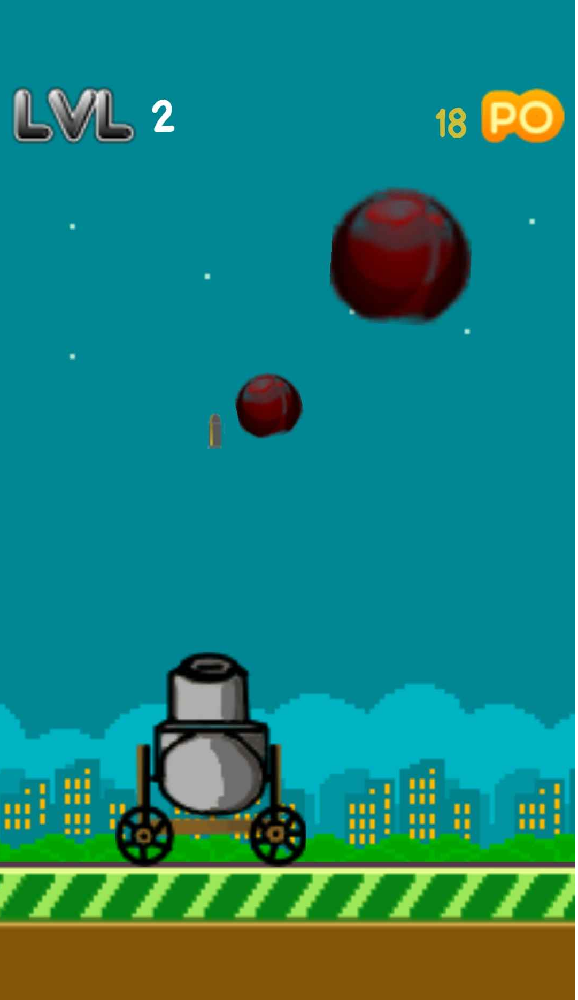

EILEMA
Unity
J'ai conçu ce jeu mobile sur Unity à partir de Ball Blast, un jeu mobile que j'apprécie beaucoup de Voodoo.
Le but est simple : contrôler le canon avec son doigt pour esquiver et détruire les boules qui nous tombent dessus.
Voici quelques-uns de mes projets réalisés dans le domaine de l'informatique graphique.
J'ai conçu ce jeu mobile sur Unity à partir de Ball Blast, un jeu mobile que j'apprécie beaucoup de Voodoo.
Le but est simple : contrôler le canon avec son doigt pour esquiver et détruire les boules qui nous tombent dessus.
Ce jeu en 3D vous propose de positionner stratégiquement vos troupes afin de remporter la bataille. Pour y parvenir, il est crucial d'observer attentivement les types de troupes et leur disposition chez l'ennemi.
Que ce soit pour observer le déroulement de la bataille ou pour positionner vos troupes, tout se passe depuis le sommet d'une tour, en vue à la première personne (FPS).
Moteur 3D pour du temps réel effectué avec OpenGL. Utilisation de Vertex Shader, Fragment Shader, normales, éclairage ambiant, diffus et spéculaire
Moteur 3D pour créer une image réaliste avec du lancé de rayons de la caméra vers chaque pixel de l'écran
Création d'un terrain avec le bruit de Perlin + une rivière ajoutée. Utilisation modèle demi-arêtes

Triangulation de maillage contour -> Delaunay
Le but de mon Autoencodeur était de faire un upscaling pour augmenter la résolution des images.
Génération de visage par GAN.
L'IA nécessite encore de l'entraînement
Modélisation d'un Sabre Laser avec 3DS Max 2022 et VRAY : modélisation + texturing + éclairage + respect des proportions